Table of Contents🔗
- 00 - Executive Summary
- INTRODUCTION & METHODOLOGY
- 01 - The First Thread: Bovax Appears in Hacker Groups
- 02 - Telegram Bot
- 03 - Telegram Channels
- 04 - Does He Actually Have the Vodafone System?
- 05 - Unmasking the First Admin
- 06 - Bovax Reveals He is WA0_3
- 07 - Tracking WA0_3 Across Forums
- 08 - CyberS102 Team
- 09 - Real Name Confirmation
- 10 -Tracking the Telegram Account via NFT Gifts
- 11 - Tying Revesky to WA0_3
00 - Executive Summary🔗
This report presents the results of a multi-month cyber threat intelligence investigation into an Egyptian threat actor operating under the aliases Revesky, wa0_3, and Bovax.
The investigation began after we identified a Telegram account advertising access to Egyptian government databases. What initially appeared to be a single seller was gradually uncovered as part of a larger operation targeting government entities, universities, and organizations across Egypt, Saudi Arabia, Iraq, and Kuwait.
Throughout the investigation, we collected and connected evidence from multiple independent sources, including Telegram groups, underground forums, leaked databases, deleted messages, historical usernames, blockchain artifacts, NFT gift transfers, and operational security mistakes. No single finding identified the actor on its own, but together they revealed the structure of the operation, its infrastructure, and the people behind it.
During the investigation, we independently verified that the actor had live access to services associated with Vodafone Egypt, demonstrating that the operation relied on active system access in addition to previously obtained data. We also identified a second administrator, known as "Maro", and successfully linked him to a real-world identity through independent investigative findings, providing further insight into the people involved in the operation.
Based on the evidence presented in this report, we assess with High Confidence that the aliases Bovax and wa0_3 are operated by the same individual. We further assess with Medium Confidence that the alias Revesky is operated by the same individual, based on multiple independent findings that consistently point to the same attribution.
The evidence collected during this investigation has been securely preserved and shared with the appropriate law enforcement authorities to support further investigation and any necessary legal action.
INTRODUCTION & METHODOLOGY🔗
In late 2025, we identified a Telegram account advertising access to Egyptian government databases. That discovery marked the beginning of a multi-month investigation that uncovered an interconnected network of underground forums, private Telegram groups, and threat actor personas operating under the aliases Revesky, WA0_3, and Bovax.
As the investigation progressed, we uncovered a Telegram bot capable of querying data associated with the Egyptian Ministry of Supply and validated that the actor possessed live access to services associated with Vodafone Egypt. The same aliases were subsequently linked to breach advertisements and leaked data involving government entities, universities, and organizations across Egypt, Iraq, Saudi Arabia, and Kuwait, revealing an operation that extended well beyond isolated database leaks.
Rather than relying on a single breakthrough, the attribution was built by correlating dozens of independent findings. Closed Telegram communities, recovered deleted messages, historical forum activity, infrastructure analysis, Telegram NFT gift tracking, blockchain artifacts, and operational security (OpSec) mistakes each contributed a small piece of the puzzle. Individually, none of these artifacts identified the actor. Together, they formed a high-confidence attribution linking multiple online identities to the same operator.
This report reconstructs that investigation from beginning to end, documenting how each lead was discovered, validated, and connected until the complete picture emerged.
This report is structured as a chronological investigative story each section builds upon the previous one. We start from the first thread (the Bovax Telegram account) and follow it step by step until we reach the true identity and the final linkage to Revesky. Every claim is supported by visual evidence (screenshots, API responses, recovered deleted messages). We strongly recommend reading the sections in order.
01 - The First Thread: Bovax Appears in Hacker Groups🔗
INITIAL DETECTION ( TELEGRAM GROUPS )
As a CTI firm, we have long maintained a presence in private hacker Telegram groups monitoring discussions, engaging where appropriate, and tracking threat actors over extended periods. During this monitoring, an account operating under the alias Bovax (Telegram ID: 7955791415) drew our attention.
Bovax claimed to have direct access to the systems of the Egyptian Ministry of Supply (msit-cms.com). To establish credibility within these underground communities, he launched a promotional offer, telling members:
"Come on guys, first 20 national IDs i will search for free."
The offer meant that the first 20 users who submitted an Egyptian National ID number would receive a free lookup against what Bovax claimed was the Ministry of Supply's database. By providing these complimentary searches, he attempted to demonstrate that he possessed genuine access to the ministry's records and to build trust among potential buyers.
After using these free lookups to convince members of the authenticity of his claims, Bovax escalated his offering by advertising full access to the ministry's infrastructure, posting messages such as:
"Who wants to buy Egyptian Ministry of Supply access?"
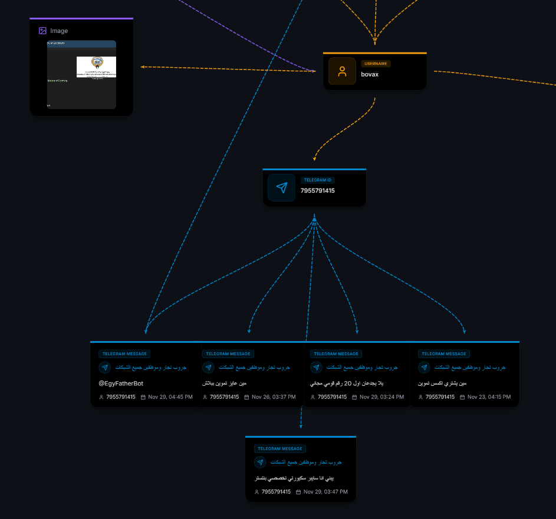
Bovax initially built credibility by offering free searches against what he claimed was the Egyptian Ministry of Supply database. After establishing trust with group members, he began advertising the sale of direct access to the ministry's systems.
As we continued investigating Bovax, we used Dexpose's intelligence platform to search across Telegram communities and reconstruct his activity. This allowed us to recover his messages from numerous public hacker groups, as well as several private groups where he had been active.
Among these messages, Bovax repeatedly claimed that he was responsible for breaching nearly half of Iraq's universities, presenting himself as the threat actor behind many of those compromises. He also stated that he had "obtained more than 6 CVEs".
At that stage of the investigation, we had not yet realized that these claims were only the beginning of a much larger operation.
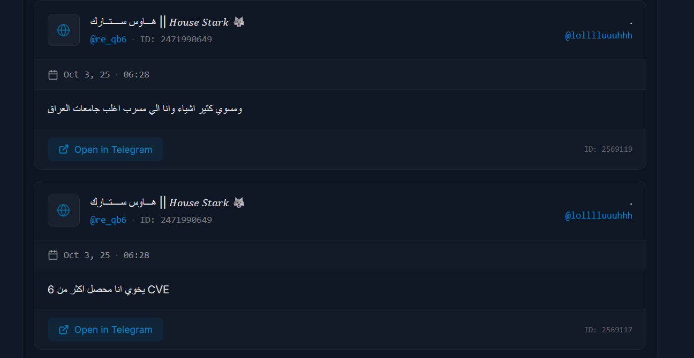
"I've done many things and I am the leaker for most universities in Iraq" + "Bro, I have obtained more than 6 CVEs" ( October 2025 )
Simultaneously, we searched for the username "Bovax" on known hacker forums like BreachForums (BF) and DarkForums (DF). We found the exact same account leaking employee data from the Kuwaiti Ministry of Electricity, Water and Renewable Energy for free, with a direct GoFile download link:
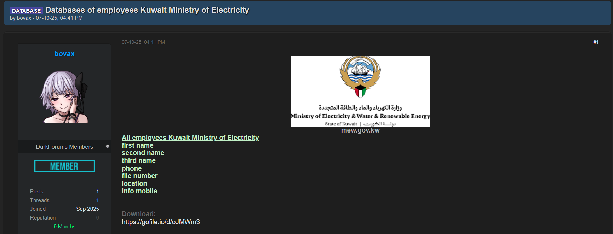
"Databases of employees Kuwait Ministry of Electricity, Water and Renewable Energy" Full names, phone numbers, employee file numbers, locations, IMEI with public download link available
02 - Telegram Bot🔗
TELEGRAM BOT INFRASTRUCTURE
While monitoring Bovax's messages, we observed a third party sharing the username of a Telegram bot @EgyFatherBot and claiming that it belonged to Bovax, stating that he intended to continue developing it in the future. At this stage, however, this was merely an unverified claim made by a third party, with no independent evidence confirming ownership. As shown in the following section, we will later present evidence that substantiates this claim.
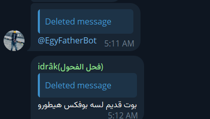
Confirmation from a third party that the bot belongs to Bovax "an old bot, they're updating it"
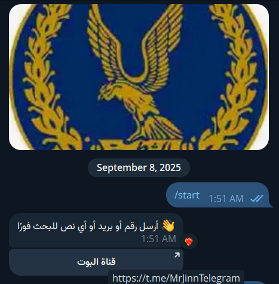
Sending /start requires subscribing to the @MrJinnTelegram channel
The CTI team monitored the bot for over two continuous months. When sending /start, the bot requires subscribing to the channel **@MrJinnTelegram as a prerequisite to function. The bot was initially free for a significant period before transitioning to a paid model.
We discovered that the bot relies on a mix of leaked databases and private databases that we had never seen offered for sale on any forum previously. More alarmingly, the bot operates in tiers a public free tier, and a hidden tier only visible to the bot owners' circle of trust:
Tier 1 - DBS Database: Complete Egyptian national ID card data along with actual images of the cards. Below each card image is a link to the @Jinnhack channel.
Tier 2 - Ministry of Supply MSIT-CMS (Public & Paid): A section visible to users but requiring a paid subscription. Searching by phone number or national ID returns the complete ration card data, including family members and their individual national IDs.
Tier - Vodafone Egypt (Hidden for Circle of Trust Only): A secret section not visible to normal users. Upon entering any Egyptian Vodafone number, it displays the full details of the line owner in real-time from Vodafone's internal system.
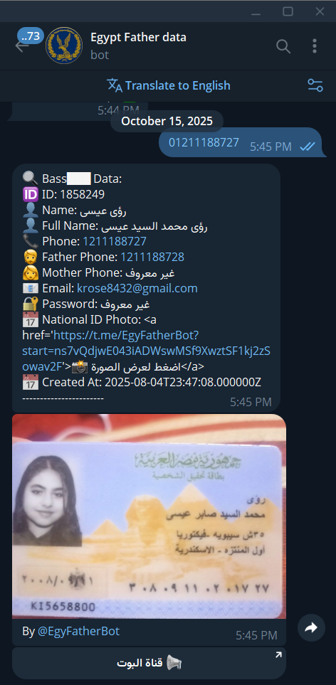
The bot outputs national ID card data with its actual linking to the @Jinnhack channel below
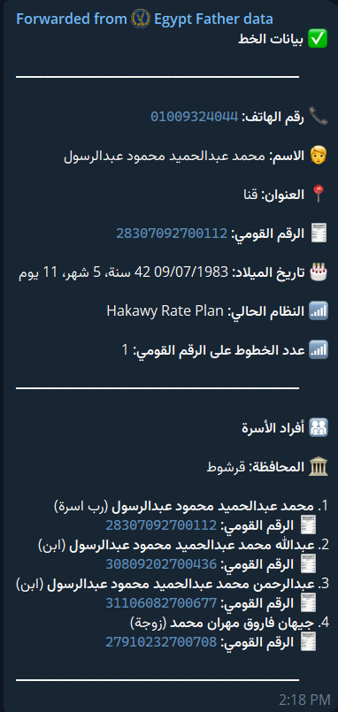
The bot displaying Ministry of Supply data( family members and their individual national IDs )
After the free subscription period expires, a message appears asking the user to directly contact @bovvax to renew:
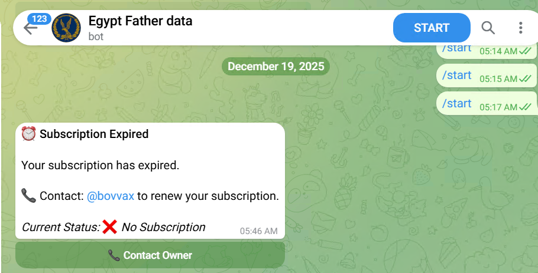
"Subscription Expired Contact @bovvax to renew" The direct admin of the bot
03 - Telegram Channels🔗
DIGITAL INFRASTRUCTURE MAPPING
By tracking the two channels linked to the bot, we found that the digital infrastructure consists of four interconnected tiers:
Infrastructure Chain:
- **@EgyFatherBot (Main Bot)
- **@MrJinnTelegram (Mandatory Subscription Channel)
- @Jinnhack (Main Sales Channel)
- **@jinnhackers (Discussion Group)
Searching through the old messages of the @Jinnhack channel, we found that Bovax was an admin there and had posted the bot's subscription prices:
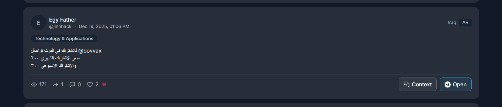
"To subscribe to the bot contact @bovvax monthly subscription price is 600 EGP weekly is 300 EGP"
They were also requesting Bitcoin donations to keep the bot running for free:
Bitcoin Address: bc1qjlwzkf77███████████████djtllrkagtn48l
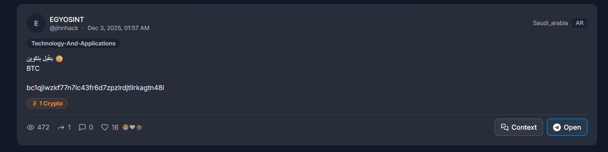
04 - Does He Actually Have the Vodafone System?🔗
LIVE API ACCESS VERIFICATION
The hidden Vodafone section in the bot piqued our curiosity. The most important question: Is this just an old leaked database? Or does he actually have live access to Vodafone's internal system? To answer this question, we designed a foolproof test.
Verification Plan: I contacted Bovax pretending to be a serious buyer interested in purchasing direct API access to the Vodafone system. However, before paying, I wanted to verify his credibility. Therefore:
- I purchased a brand new Vodafone line registered in my name , a line that did not exist in any previous leak because it was new.
- I sent the new line number to Bovax and asked him to query it as a test.
- The response came back in seconds , a complete JSON response from the internal Vodafone system.
- I compared the results with the original contract , 100% match: name, national ID, governorate, plan type, and account status.
json// Direct Vodafone API Response , the number is completely new and has never been leaked
[
{
"IDs": [{ "schemaName": "ContractID", "value": "2███████4" }],
"categories": [
{ "listHirarchyId": "Payment", "value": "Prepaid" },
{ "listHirarchyId": "Tariff", "value": "Flex_Family_2021" },
{ "listHirarchyId": "CustomerType", "value": "PREPAID" }
],
"contact": [{
"contactFirstName": "█████████",
"contactLastName": "██████████████████",
"nationalID": "3████████████████",
"city": "D██████a"
}],
"billingAccount": {
"state": "ACTIVE"
}
}
]
// ⚠ Result: 100% match with contract data , line is new and not in any leak ← live access confirmed
The response structure matches the Vodafone TM Forum Open API. This suggests one of three scenarios: (A) Compromised internal employee credentials, (B) An IDOR vulnerability in an improperly authenticated API endpoint. or (C) A breach of a third-party vendor integrating with Vodafone's system. In all cases, this is direct, live access not a leaked database.
05 - Unmasking the First Admin🔗
DE-ANONYMIZATION , ADMIN #1
While tracking the discussion group @jinnhackers linked to the @Jinnhack channel , We noticed something important: a message forwarded from the channel to the discussion group, but the message was deleted. Despite the deletion, the sending admin's signature remained visible in the group.
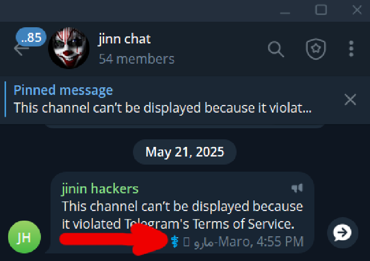
*Discussion group showing the admin signature "⚕️𓂆 مارو-Maro"
Using Dexpose's intelligence tools, we recovered deleted messages from the MrJinnTelegram and Jinnhack channels. Among them, we identified a message posted by an administrator using the same name that had previously appeared in a deleted message from the ⚕️𓂆 مارو-Maro discussion group.
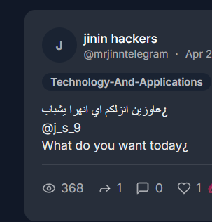
Sender: @j_s_9 "What do you want me to drop for you today guys?"
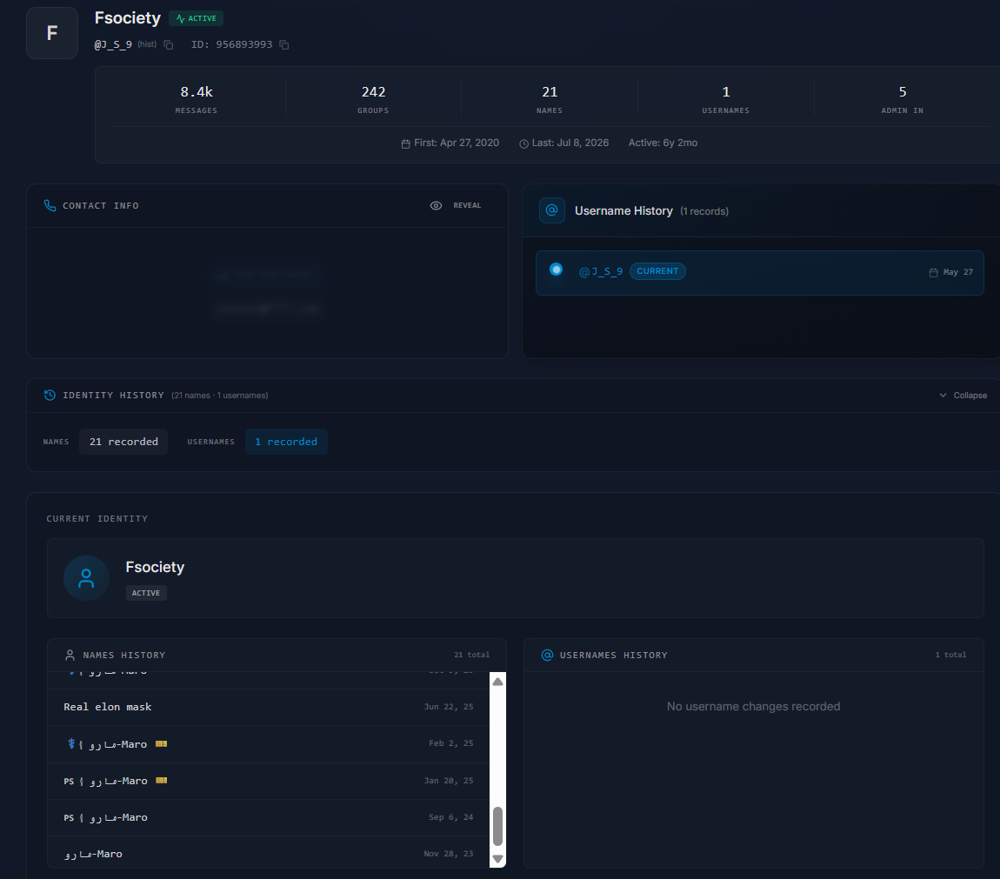
The sending account was @J_s_9 (Telegram ID: 956893993). Analyzing this account, we found that it bore the name ⚕️𓂆 مارو-Maro , and it was the very first account to send a message in the jinn chat group (in September 2021 , when the Fsociety @J_s_9 956893993 account added a member named SANGOB). This signifies that he is a founder:
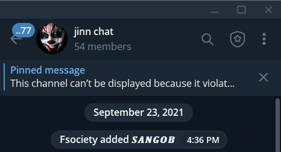
First message in the group , September 2021 , Fsociety adding a member , proving he is a founder
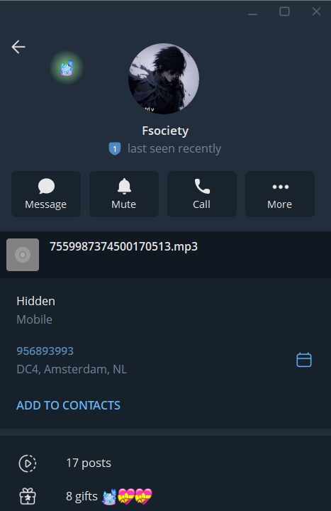
Profile of @J_s_9 , Name "Fsociety" , ID: 956893993
Now the decisive step: Using our DeXpose's internal tools to query the phone number associated with the Telegram ID 956893993, we obtained the number: 01090876870.

Searching our internal threat intelligence portal, we found this number linked to a compromised device registered under the name MARO. The number appeared specifically in the autofills section meaning the device itself had been previously compromised, and its auto-saved data (passwords, phone numbers) were available to us. Within the autofill data, we also found a landline number starting with 05 which is the area code for landlines in Sharqia Governorate, Egypt.
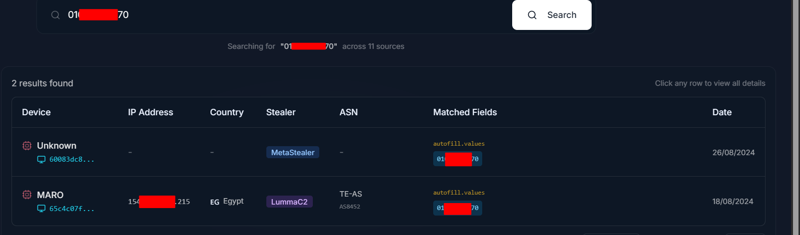
Internal portal showing the number 01090876870 linked to a compromised device named MARO the number is in the autofills section along with a landline number from Sharqia Governorate
In cooperation with the Egyptian authorities to determine the ownership of the phone number 01090876870, we obtained the subscriber's records, which revealed that the number was registered under the father's name:
Father's Name: Mohamed Shaban Emam Mohamed
National ID:
27207161300492
Address: Al-Shabanat, Sharqia
Email: mohamedmandi311@yahoo.com
We then managed to obtain the details of his son, the individual identified during the investigation:
Name: Mohamed Mohamed Shaban Emam
National ID:
30301071301731
Date of Birth: 07/01/2003 (Age: 22)
Governorate: Sharqia
Recovered deleted message -> @J_s_9 account -> Telegram ID 956893993 -> Phone number 01090876870 -> Compromised device MARO in internal portal -> Sharqia landline number -> Government coordination -> Father and son data confirmed.
06 - Bovax Reveals He is WA0_3🔗
SELF-INCRIMINATION , PERSONA LINKAGE
After proving that Bovax indeed possessed live access to the Vodafone system, we engaged him more deeply, feigning interest in making a purchase. We asked him: "How can you access data like this?"
His response was surprising in a moment of pride and boasting, he wanted to prove he wasn't merely a broker, but a real hacker and a known leaker. He literally said:
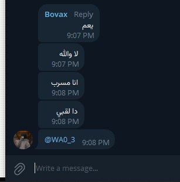
Bovax says: "Man" , "No honestly" , "I am a leaker" , "That's my alias" , then he sends: @WA0_3
He didn't stop there he proceeded to send two voice messages detailing exactly how he operates and what his capabilities are. We retained the voice messages as hard evidence:
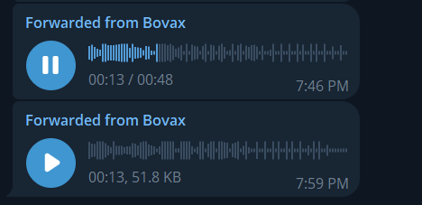
"Forwarded from Bovax" Two voice messages (00:48 + 00:13 = 51.8KB) retained as evidence
This confession links two accounts that appeared independent: Bovax (ID: 7955791415) , the bot operator and access seller , is the exact same person as @wa0_3 (ID: 7060080770) , the active hacker on forums. This means all of wa0_3's forum activity is now directly attributed to the bot operator.
07 - Tracking WA0_3 Across Forums🔗
CROSS-PLATFORM OSINT , FORUM LEAKS
After confirming that Bovax is wa0_3, we launched a systematic search across hacker forums. We found an active account under the same name showing interest in Egyptian and Saudi data:
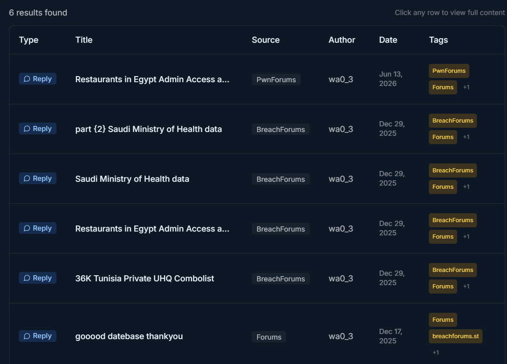
The Most Critical Discovery: The forum where wa0_3 was registered had its own database leaked and made public. Searching through this leak, we extracted the email associated with his account:
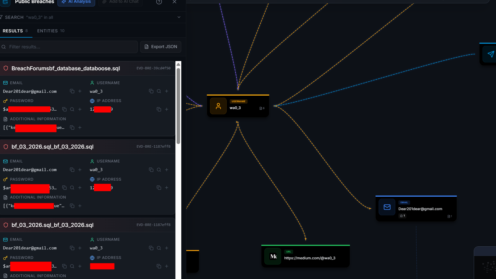
wa0_3 email (from forum DB leak): Dear201dear@gmail.com
We also found a Medium account medium.com/@wa0_3 where he posted write-ups for some of the breaches he executed.
Digging deeper, we found another similar username: wa0__3 (with two underscores) on the same forum. From the forum database leak, we retrieved its email as well:
wa0__3 email (from forum DB leak): wa3ziadwa@gmail.com
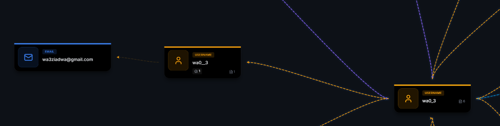
The email wa3ziadwa@gmail.com can be broken down into: wa3 + ziad + wa. The name "Ziad" clearly appears in the middle of the email. Is this his real name? At this stage, it was just a faint possibility but we will soon see how we confirmed it with undeniable evidence.
08 - CyberS102 Team🔗
THREAT ACTOR GROUP
While tracking the messages of wa0_3 (ID: 7060080770) on Telegram using company tools, we found him claiming in a public group that he, together with @wa0_0_o, @Wa0, @yosvz, and @sh4dx0r, was responsible for breaching the Saudi Ministry of Justice.
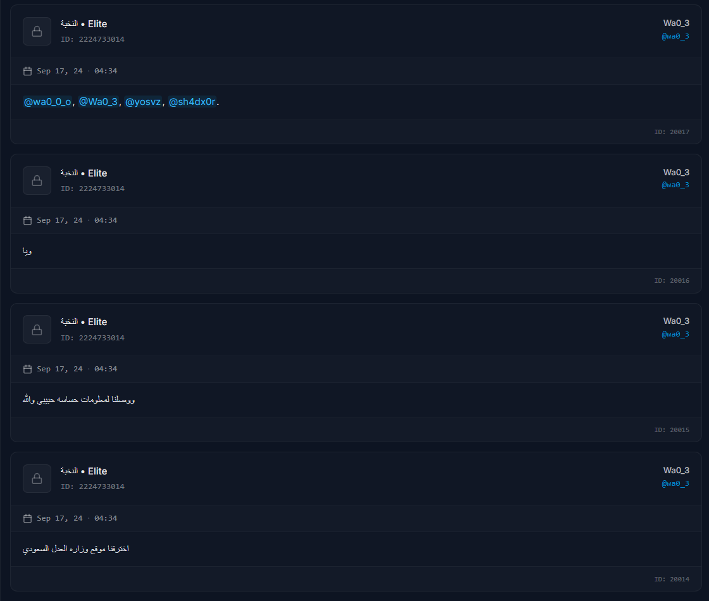
"We reached sensitive information -- @wa0_0_o, @Wa0, @yosvz, and @sh4dx0r as participants.
Searching underground forums for the Saudi Ministry of Justice breach, we located the original leak thread. The publisher, using the alias mrxzyx1, included a contact link directing users to the CyberS102 Telegram channel, establishing a direct association between the breach and the CyberS102 group.
From the leaked forum database, we also obtained the email address associated with the publisher:
mrxhamster1@gmail.com
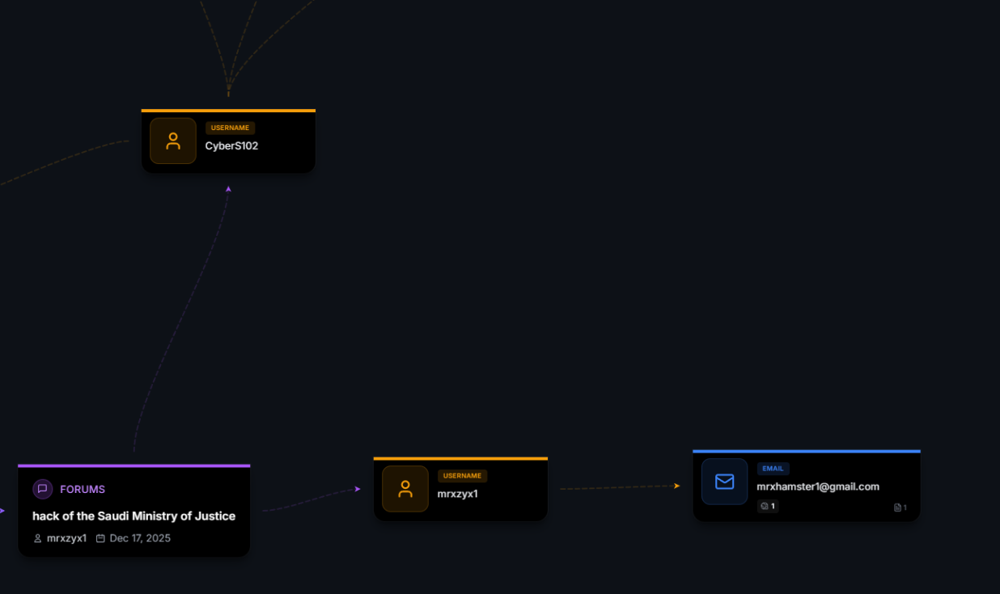
Searching for CyberS102 across the company's Telegram intelligence tools, we identified the group's members and their roles.
Confirmed CyberS102 Members:
- @wa0_3 (ID: 7060080770) = Bovax
- @td9_l (ID: 7770242881)
+201157626459 - @V9_9_i (ID: 8015824070)
+9647838025000
We also obtained the registered phone numbers associated with @td9_l and @V9_9_i using the company's Telegram attribution tools.
Further investigation into the CyberS102 channel revealed that the group publicly claimed responsibility for compromising multiple Iraqi universities.
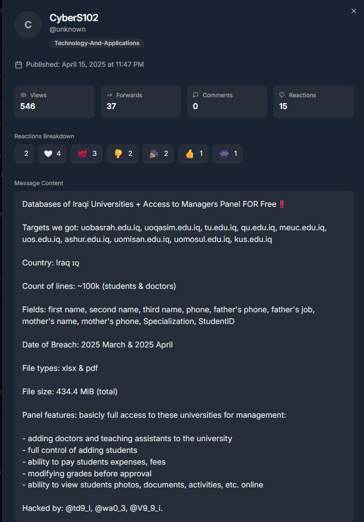
CyberS102 announces the breach of: uobasrah, uoqasim, tu, qu, meuc, uos, ashur, uomisan, uomosul, kus , ~100K student and teacher records | March–April 2025
Separately, while continuing to monitor wa0_3's Telegram activity, we found him boasting in another public group that he had "hacked half the universities in Iraq."
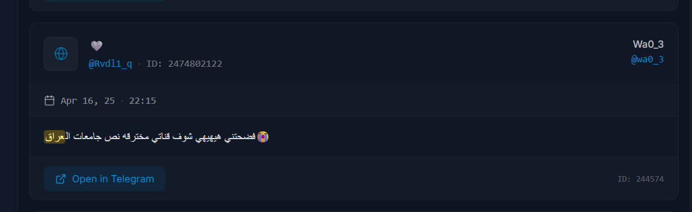
"You exposed me hehehe look at my channel I've hacked half the universities in Iraq."
Note: In addition to Bovax's explicit admission that he is the same person as @wa0_3, another common link between the two identities is their involvement in the compromise of Iraqi universities, further reinforcing that both accounts are operated by the same individual.
09 - Real Name Confirmation🔗
DE-ANONYMIZATION , REAL NAME CONFIRMATION
Intensifying our search through the messages of the wa0_3 (ID: 7060080770) account, we found a revealing series of messages in a public group , three consecutive messages dated April 14, 2025:
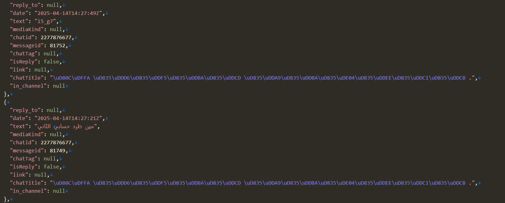
14:27 , "Who kicked my second account" | 14:27:49 , "i5_g7" (Backup account) | 14:29 , "I am Ziad"
The sequence of events is clear: (1) wa0_3 asks "Who kicked my second account", (2) he mentions the name of the kicked account: i5_g7, (3) someone asks him "Who are you?", (4) he replies:
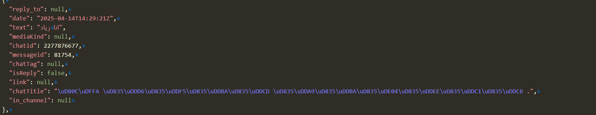
wa0_3 reply: "I am Ziad" Direct evidence of the real name
Evidence 1: The email wa3ziadwa@gmail.com linked to the wa__3 account on the forum , "ziad" is in the middle of the email. Evidence 2: The direct confession "I am Ziad" in the public group. Evidence 3: (As we will see in the next section) , The alias "Ziad" in another group.
10 -Tracking the Telegram Account via NFT Gifts🔗
NFT GIFT CHAIN ANALYSIS
While tracking the backup account @i5_g7 (ID: 7448932913), we faced a problem: We couldn't track his messages directly. But we noticed something unique , the account holds NFT gifts on Telegram.
NFT gifts on Telegram show who sent them and who received them. By tracing the chain of gifts, we identified the people with whom i5_g7 exchanges gifts , and then identified the mutual groups between them. This gave us a window into his activity in groups we didn't even know existed.
Prior to this, we retrieved the account's historical usernames linked to the same ID:
Telegram ID: 7448932913
Current Username: @d4bbd
Previous Usernames: y7u1i, d4bbd, dzbbd, Y7ui7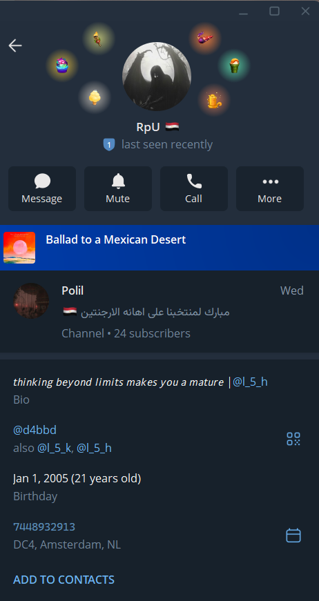
ID: 7448932913 | Current Username: @d4bbd | Date of Birth: January 1, 2005 (Age: 21) | Spoofed Location: DC4, Amsterdam NL (VPN)
In the groups we discovered via NFT tracking, we found the account involved in explicit malicious activities:
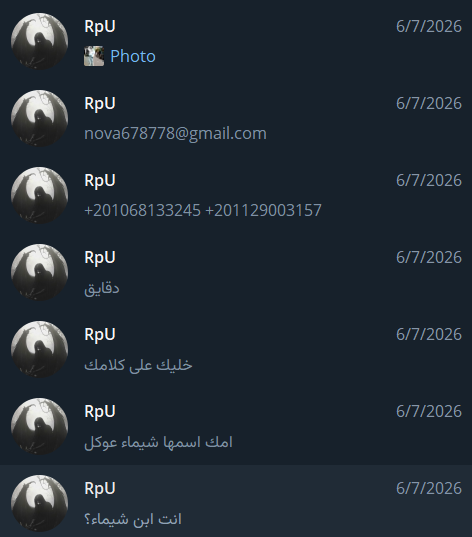
Note: The account was actively doxing Egyptian individuals in a public Telegram group by publishing personal information upon request. This strongly indicates that the operator had access to one or more Egyptian databases, which were used as the primary source for performing these doxing requests.
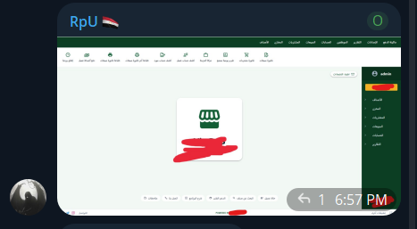
A screenshot proving his access to the admin panel of a compromised Egyptian website
More importantly , in one of those groups, we found the account officially bearing the alias "Ziad", with a direct mention to him from another member: "Ziad, look":
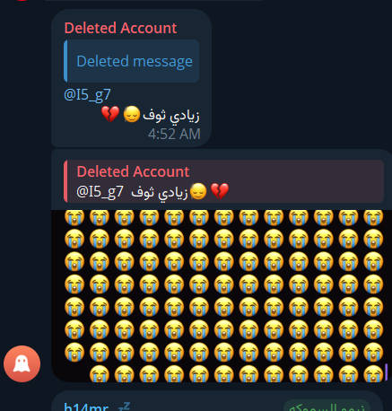
We also identified the same account serving as an administrator in one of the Telegram groups, where it operated under the alias Ziad.
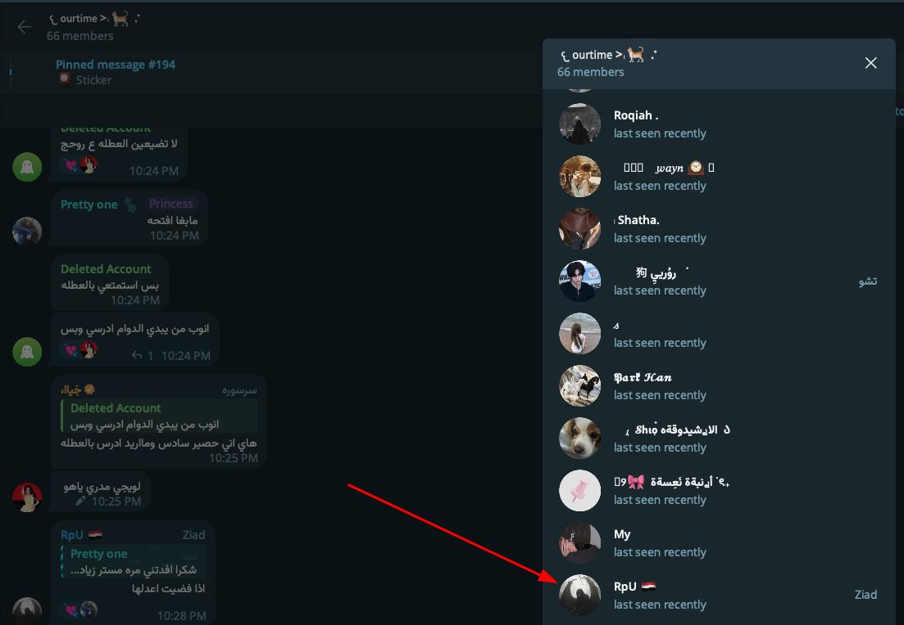
The group's member list shows the account under the alias "Ziad" , and messages are directed to him by this name
We now have three independent pieces of evidence: (1) The email containing "ziad", (2) The direct confession "I am Ziad" in a public group when mentioning his backup account i5_g7, (3) The official alias "Ziad" in another group on the i5_g7 account itself. All this links wa0_3 and i5_g7 to a single person named Ziad.
11 - Tying Revesky to WA0_3🔗
FINAL ATTRIBUTION , REVESKY LINKAGE
Until now, our entire investigation revolved around Bovax/wa0_3. But Revesky , the account that suddenly appeared on DarkForums publishing leaks from Egyptian Ministries , was not yet tied to any account. Revesky appeared on DarkForums in May 2026 and published two massive leaks:
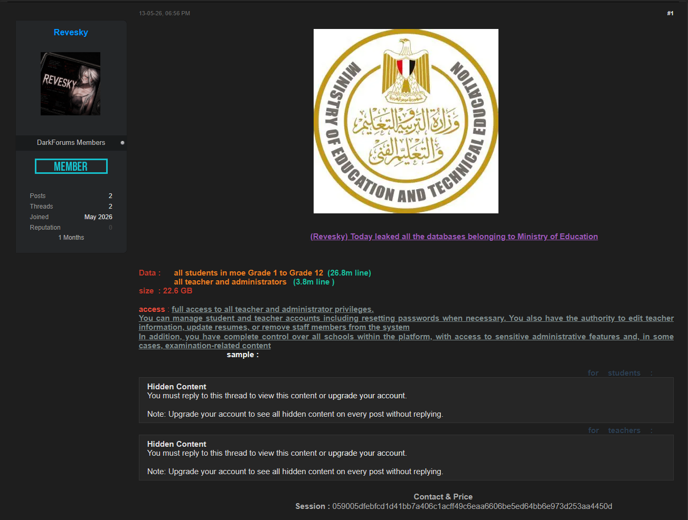
26.8M Students (Grade 1→12) + 3.8M Teachers + Full Admin Access , 22.6GB , Includes managing student and teacher accounts, modifying exams, and accessing all schools
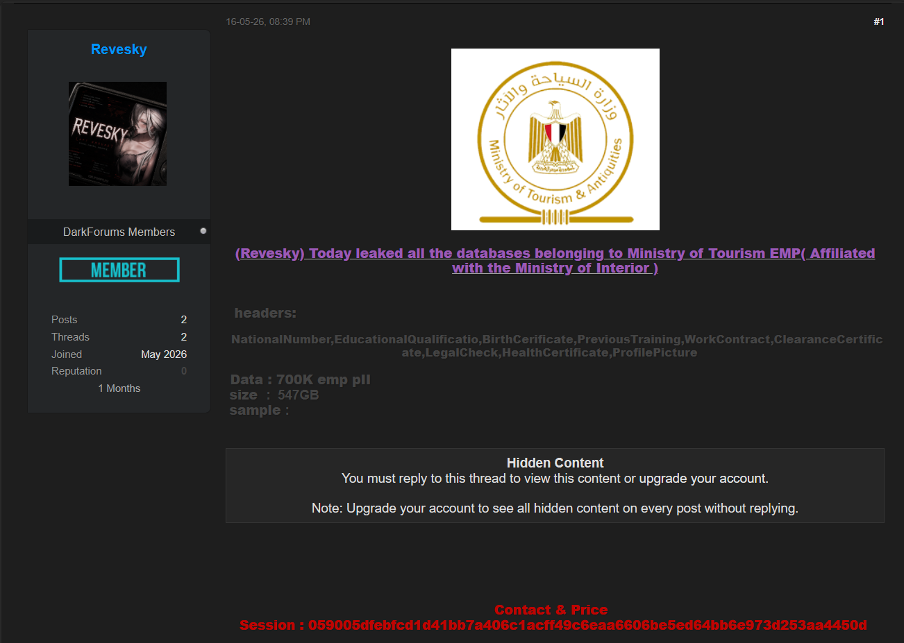
700K Employee PII (Affiliated with Ministry of Interior) , 547GB , National ID, ID photo, criminal record, contracts, health certificates
In both posts, Revesky provided a contact method via Session Messenger , a decentralized, encrypted protocol that doesn't require a phone number , reflecting security awareness to avoid Telegram for buyer communications:
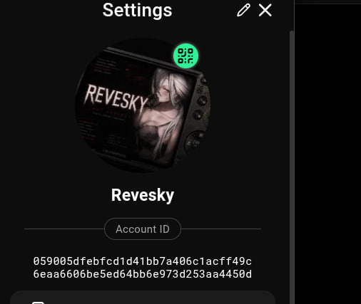
Session ID: 059005dfebfcd1d41bb7a406c1acff49c6eaa6606be5ed64bb6e973d253aa4450d
How did we link Revesky to wa0_3? We found in a private Telegram conversation with wa0_3 (dated December 30, 2025) that he claimed to have dumped the Egyptian Ministry of Education database:
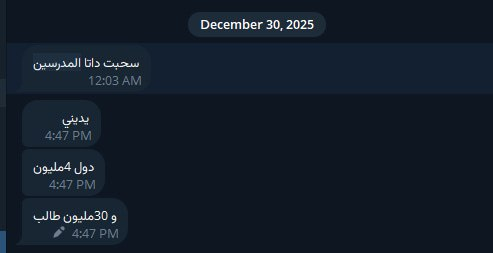
"I dumped the teachers' data" , "They are 4 million" , "And 30 million students" , December 30, 2025
The screenshot of this conversation was shared with us on January 6, 2026, providing the first indication that wa0_3 possessed a large Ministry of Education dataset.
For independent verification, on January 6, 2026, we contacted Wa0_3 privately via Telegram and sent him the phone number of a real teacher employed by the Egyptian Ministry of Education, requesting a lookup.
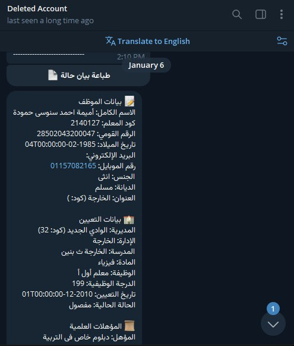
wa0_3 returned the teacher's complete profile, including the full name, teacher code, national ID, directorate, school, subject, job title, occupational grade, hiring date, employment status, and educational qualification. The returned information was verified and matched the teacher's actual records.
The numbers also match closely: wa0_3 claimed to possess 4 million teacher records and 30 million student records in December 2025, while Revesky later advertised a Ministry of Education dataset containing 3.8 million teachers and 26.8 million students. The close correspondence strongly indicates they were referring to the same dataset.
Evidence: (1) wa0_3 claimed to possess approximately 4 million teacher records and 30 million student records in December 2025. (2) The screenshot documenting this claim was shared with us on January 6, 2026. (3) On the same day, we independently verified the dataset by sending Revesky the phone number of a real Egyptian Ministry of Education teacher, and he returned the correct record. (4) Revesky later advertised the same dataset with 3.8M teachers and 26.8M students. (5) Bovax later admitted that he was wa0_3.
Attribution Assessment: Based on the accumulated evidence, we assess with Medium-High Confidence that the aliases Revesky, wa0_3, and Bovax are operated by the same individual. While the linkage is highly probable and strongly supported by correlated data, it remains short of absolute certainty pending physical or law enforcement verification.